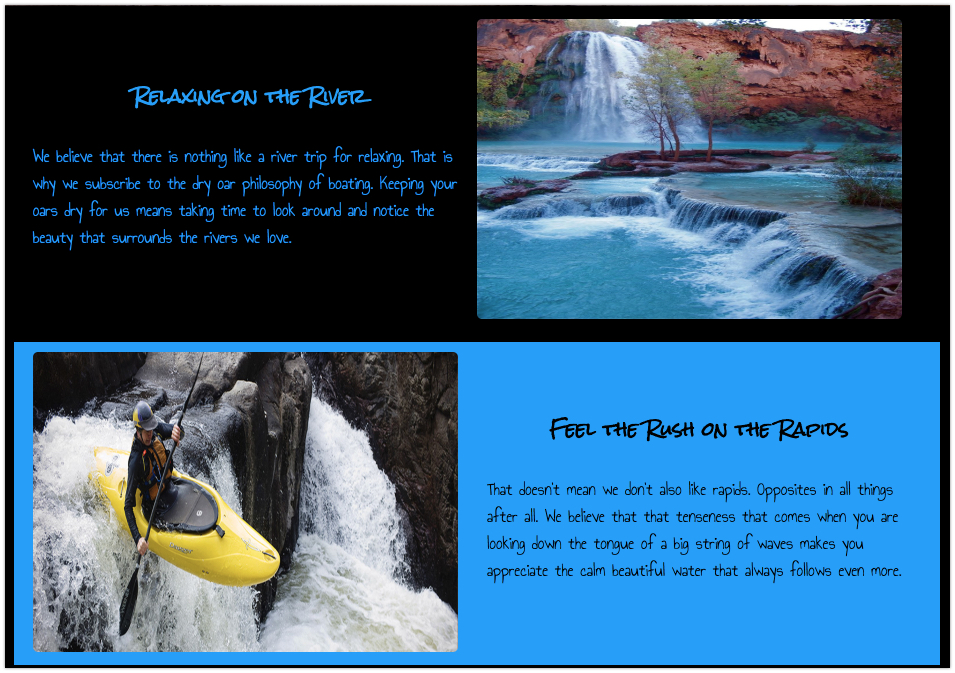

Wk04 Fonts and Spacing & Finishing Touches
Part I Fonts and Spacing
Activity Directions
Estimated Time: 45 minutes
This activity will use the following new css concepts or properties (review the links if you do not remember these from Khan academy):
Nothing makes a webpage feel like more of a product and less of a project than changing from the default fonts. For your Site Plan, you should have chose one or two fonts and used them as you the home page. Review that now.
Here is a web-safe list that can be used just like Khan academy showed you this week. (Here is another list of the web-safe fonts: http://www.cssfontstack.com/)
Now we are going to learn how to import some fonts and use them on our page. This will add a little sparkle to our sites and teach you the concept of import and use in font family elements.
Here is a step by step video for Part I-Fonts and Spacing:
Step 01
Based on your font choices from your site plan, we are going to find similar fonts in google fonts to import and replace the fonts you originally have chosen on you on your page. You are to add the appropriate font-family:, and @import lines to your CSS <style> section to change the paragraph font, headline font, and navigation font on your webpage.
You MUST import and use at least three google fonts for this assignment.
No matter which fonts you choose it is always a good idea to list some fall-back fonts, in case for some reason your imported choice doesn't work correctly... you can control how it degrades. A font family is at least a group of 2 or more fonts... the first in the family is your google imported choice, the second choice in the family should be similar to your first (and usually web-safe), and a third font in the same font family should usually be a default font such as (serif, san-serif, fantasy, monospace, or script)
So for example if I chose Helvetica as my font for body copy I would add something like font-family: Helvetica, Arial, sans-serif; to a rule modifying the body of my page.
But, since we have to import a google font, I am going to use the font Rock Salt for my headlines, that is not a web safe font and will probably not be on most computers. I have to do an extra step to make it available.
Google Fonts makes it very easy to add your fonts. Find your the Rock Salt font in Google Fonts: www.fonts.google.com and click the red plus.

I usually search and choose all of the fonts that look interesting to me, or that I might use (at least 3 fonts) and then find the black bar on the bottom of your screen and click on it to expand it. Then click on the "@import" tab.
Copy the line that starts with '@import' and add it to the top of your <style> block. It should look something like this:

This will be pasted at the top of the style.css page
*note: google fonts can be imported with multiple fonts in one statement. Less is best. They can be imported as a <link> in the <head> section of the html section or in the style section (css).
Now you can use that font just like normal, ie: font-family: 'Rock Salt', cursive;
Step 02
Often the default font sizes are fine...but there are times when they need to be changed. For example it's good for the links used for navigation to be nice and easy to click, so lets increase their size. Let's make it 110% of normal.
(Remember the 'em' unit of measurement for fonts. 1em = the normal size of your font...so 1.1em = 110%)

Nice to have those fonts in there :) Now though notice what is happening anywhere that you have made colored boxes around anything. Here is an example:
The font and image are pressed right up against the edge of the border and it looks...not great. Lets fix it.
The space between the content in a box and the edge of a box is called padding. We can add padding to one or all sides. for example if I wanted to add some padding to all 4 sides of the box I would do something like this:
sec1, .sec2, footer {
padding: 1em;
}
Use padding to space out the content on your page from any edges or borders where it is needed. Put 10px padding on both your paragraphs and headlines also.
It is best to use padding rather than hard margins at this point.
Step 03
Proximity is a design principle that we rely on to help to know which elements on our page are related to each other by their distance from each other. Let's make sure that visitors to our site know that the headlines and paragraphs are related to each other by bringing them a little closer together. (The default spacing has them just a little far apart.) Adjust the line-height of your headlines to bring them closer to the paragraphs they belong to. You could even play with the line-height of your paragraphs to see how it affects readability as well.
If you are having a hard time getting your headlines to come closer to your paragraphs try this: right click on one of your headlines and select "Inspect". An area on your browser should open at either the side or bottom of the screen that shows both the html and the styles for that element. This is a powerful tool.
When I did this I saw the following:
.jpg?_&d2lSessionVal=3HWFKkoHpLlNBis0aj2MNkAE0&ou=373159&_&d2lSessionVal=KnbGvAm38qFjrMwzMgjCAnASP&ou=373160 "inspect")
- Notice that browser is showing me the size of the element in pixels.
- It's also showing me the area it takes up both for size (blue highlight) and margins (brown highlight). If there were any padding it would be green.
- All the styles are shown. The third arrow shows styles I defined.
- The last arrow shows several styles I did not define. Notice it says "user agent stylesheet" That's just another way of saying "browser default styling".
The highlighted area and the styles are both showing in different ways that <h2> has top and bottom margins defined by default. Those defaults are probably interfering with your desire to move the headline closer to the paragraph.
Another way of seeing this can be found if you scroll down in the area showing the styles...you should see something like in the Box model figure.

Section 04
If you refer back to the wireframe you will notice that the paragraphs in each of the sections only take up about half the screen. Let's make them do that now. We can use the width property again to do this. You should have placed the headline and paragraph together in a box and given it a class to identify it. If you didn't do that now. My code looks like this
Last week, we grouped and identified things. We placed the headline, and paragraph in the first section in a <div> with a class of leftcol, then I use that same class for the left column in section2. Then I did the same thing for the content that will be in the right column (once we learn positioning).
Layout will go much easier if your HTML is well structured. Think of a body and skeleton. If the bones in your elbows bent backwards instead of forwards you could scratch your own back easily, but you would have a really hard time eating :) You could get it done, but it's better to have a structure that makes it easy. Poor HTML structure will make positioning and laying out your site much more work.
Step 05
Since the site plan wireframe shows a left column and a right column for section 1 and section 2 and the footer parts, we have to first set up in the html page those left and right parts. Then we can go to the style.css page and start setting up the page layout. Call your elements up in divs and call them: leftcol and rightcol

You won't see any changes yet on the page. Remember, we are just setting up to be able to move things around in the style.css page.
Now, do the same things for section 2 and the footer like this:

Now that we have the html portion set up, go to the style.css page and do the following:
Looking at the wireframe from the Site Plan, we will set a width of 48% on the left and right columns. This will look like this:
.leftcol, .rightcol {
width: 48%;
}
Make sure that you put one space between the , comma and .rightcol ... an important rule to remember: one space after a : and one space before a { and always one space only after a comma, in your code.
Step 06
You are to also add font-size and line height to your headlines, paragraphs, and to your nav li your nav a items to adjust their size and the line spacing... line spacing can never be less than 1em, but can be larger if desired.
We are now going to split the nav into 3 parts at this point.... nav { , nav a { , and nav li { .
The nav will contain the background-color and a padding of 1em.
The nav li will have font-family, font-size, and list-style-type: none; (this removes the dot from the list items).
The nav a will have text color (color), line-height, and put text-decoration: none; (this removes the underline).
Part II: Finishing Touches
Activity Instructions
Estimated Time: 45 minutes
This activity will use the following css concepts or properties (review the links if you do not remember these from Khan academy):
Now, we finally will put in the finishing touches and layout of the Home page. After we finish the layout of our page it should look very similar to the wireframe, and the Home page will be complete.
Review again the wireframe for the Dry Oar site from the Site Plan. We will start from the top and work down to position all of the elements that need it. The logo and navigation will be done last since it is a little more complicated.
Here is a step by step video for you if you need a little help along the way:
Step 01
First let's consider the banner: Last week we set the sizes of the images: your logo should be somewhere between 150 and 200px depending on the image. The banner has a width of 100% on that image. And, your img1 and img2 should be about 425-450px and if the images are not the same height, set the height to between 300-350px.
Step 02
Now lets position the first section of headline, paragraph and image.
You should have grouped elements together in previous weeks...the code for this section should look something like this:

Notice how each section has a leftcol and rightcol div and we have set a width on them as well to about 48%. Now all we need to do is get them to line up horizontally.
We are going to set up the page using css flexbox. Flexbox is good when we have several elements that we need aligned as a row or column. In fact it makes it really easy to switch from column to row and back. Flexbox relies on setting up a flex container or parent first. In our case the containers will be our rows which are made in the HTML with <section>s.
The link I provided above is to a great resource about flexbox from CSS-Tricks: A Complete Guide to Flexbox. You really should take a minute to look it over.
Add the following property display: flex;, to a rule in your css to modify sec1, sec2, and footer on your page to turn them into flex containers. In my case that rule would look like the following:
.sec1, .sec2, footer {
padding: 1em;
display: flex;
}
Now all of the immediate children will become flex-items or children. You should see an immediate change once you make your first section flex. You should end up with something that looks like this:
Not bad for one line of css right? It automatically reformatted into a row. This is due to the default values for flex. They are set to row and nowrap. The row is perfect for what we are trying to do, but the nowrapcould cause us problems.
Step 03
Begin fixing our small screen view by adding a flex-flow: row wrap; line just below the line that setup our flex container (display:flex;). This will allow our flex items to wrap, but it won't make them wrap. Flex items by nature are allowed to shrink and grow with the space they have available. This is controlled with the flex property.
Add flex: 1; to both the left and right divs in your section row. (This would be .leftcol and .rightcol). This will let each of them take up 1 share of the space...so they will be the same size.
We need one last bit of css to fix our small screen view.
Lets set a limit on how small the right and left columns can become. We can use the flex property for this. Above, I showed you the simplest way to use flex. Now we will add this flex: 1 0 15em; This would mean start with the item at 15em width, but let it grow to fill all available space (first 1). Don't let it shrink (middle 0) smaller than 15em though. Add that to your css.
.leftcol, .rightcol {
width: 48%;
flex: 1 0 15em;
} To help your images resize to fit in the box you have them in make sure you add the following rule in your css:
To help all images to be responsive when the screen size is changed,
add this element:
img {
max-width: 100%;
}
This will make also make sure that none of your images can ever be larger than the box they are in.

Looking good! One thing is bugging me though. The headline and paragraph in the first section is aligned at the top of that space...it would look much better closer to the center. This is another thing that flex excels at.
Alignment in flexbox is governed by two properties. align-items and justify-content.
When we set the flex-flow to row we were actually setting up the primary axis direction: row (or horizontal). This is significant because alignment along the primary axis is controlled with justify-content. We will set this to justify-content: center;
Since our primary axis is row (horizontal), we change the cross-axis (vertical) alignment with align-items. Add the following to your css for the flex container: align-items: center;. Just like that our paragraphs will always be centered vertically...no matter how the width of the page changes!
Step 05
One last thing and our rows will be done. Sometimes the paragraphs and images are smushed together. Add some margin around them to make sure this doesn't happen.
Now your code should look like this:
.leftcol, .rightcol {
width: 48%;
flex: 1 0 15em;
margin: .5em;
}
.sec1, .sec2, footer {
display: flex;
flex-flow: row wrap;
justify-content: center;
align-items: center;
padding: 10px;
}
Step 06
Finishing the footer: There should be space around the icons. This is similar to what we have done before. You should be able to figure it out.
You will probably need to add some padding of about 10px on the .socialmedia along with float: right. Set the width of the .icon to 50px or 75px whichever size you like better.
Now the Navigation
We've done a lot of work on our site so far and it's looking pretty close to that wireframe. The final portion that needs our attention is the header. I have to admit I'll be really happy when we get the page finished as well!
The code that I am basing this activity on looks like this: (you may want to adjust yours if it is not similar)

The top of my page looks like this:

Step 07
Let's make our links flow across the page horizontally first. It's important to remind ourselves why they currently look the way they do...list items are block elements. So we will change them to inline-block elements...but we also saw above that Flexbox can make columns reflow as rows...and we also gain some nifty alignment tools. Lets use that to layout our navigation. Remember that for flexbox we need to identify the items we want to display: inline-block; using nav li and then find their parent (in this case the nav ul and put our display: flex;
Step 08
,
For my example site I wanted the navigation font to be a bit larger than normal...so I added font-size: 1.2em; to my nav li rule. I also want to add a font family which also goes in the nav li. If you don't already have it, add list-style-type: none to nav li as well.
Increasing the height is a little trickier. If you instead of adding a height:3em; we will add line-height so that the text will be centered vertically. it will make the nav box 3X the size of the text...and it will look like this:

We also need to add to nav a, padding: 1em 1em; (the sizing can vary smaller... this sizing is the space around the page name: the first number is vertically and the second number is for horizontally. Make sure you also have text-decoration: none; finishing the items in nav a.
Step 9
The next thing we need to do is move the whole navigation bar up...so it is under the logo. While there are several ways to do this, the simplest would be to adjust the margin-top in nav {. This will be a negative number to move my blue bar up until none of the black at the top will show (not past that). Mine requires a margin-top: -115px; We will also add a padding of 1em; to the nav {
Now my nav words are laid out across the nav bar, but they are underneath the logo image so they need to move to the right. This will be done by adding padding-left until the page names are no longer under the nav image and they are neatly spaced across the page. The amount your nav items must move depends on different factors such as the font, font-size, padding and line height.... mine took a padding-left of 165px; in the nav li.
You may notice that there is a small gap between the navigation bar and the banner image below it. This is because we placed our links in an unordered list and the default styling of lists is to have some margin on the top and bottom to space it out from things around it.
If you have this issue, you can remove it by adding the following to the nav ul margin: 0;
(Read that selector as "Find any unordered lists which are inside of nav elements and set their margin to 0)

We are getting really close, but we still have some issues with that logo. Notice that part of the logo image is under the banner image so we will need to fix that.
In your #logo add position: relative; That made the image pop out from under. We are also going to add 10px to the top: and left: of the #logo to bring the logo away from the edge on the left and the top.
The image I am using has what is known as a transparent background...but we are going to put a background color with a border around the logo image. You can add a background-color: white; or a color that better fits with your image and theme. Now we will finish the logo off by adding a border to the #logo: border: 2px black solid;
Step 10
Our page is looking great! Only a couple of last tasks left. First is to address a usability issue. You should never make a user guess about what elements are links and what aren't. We should give them plenty of visual hints.
One thing we can take advantage of is pseudo-classes. Click on that link and look at the examples there...go on...I'll wait.
Pseudo classes let us target specific states of elements, such as link. Links have 4 states: link (normal, nothing has happened), visited (link has been clicked on), active (link is currently being clicked), and hover (mouse is on link, but not clicking)
We will be setting only the hover rule.
This means that when you hover the cursor over a page name, something particular will happen: A color change of font, a background-color change, a button will appear, etc. This will be done by adding a new element for a rule: nav a:hover { There cannot be a space between the a: and the hover... that is critical. I like to add a button to show on hover with a background-color and a text color. My code for this would be:
This means that when you hover the cursor over a page name, something particular will happen: A color change of font, a background-color change, a button will appear, etc. This will be done by adding a new element for a rule: nav a:hover { There cannot be a space between the a: and the hover... that is critical. I like to add a button to show on hover with a background-color and a text color. My code for this would be:
nav a:hover {
background-color: #00ff00;
color: #ff4000;
border-radius: 5px;
box-shadow: 5px 5px 5px black;
}
This finishes our nav and logo setup... should look something like the following:

Step 11
View your page to make sure that all of your images show and are the right size. Lastly, take a critical look at your page to make sure that it has visual appeal: The fonts work well and are easily readable, the colors work together nicely, that the page follows the layout we did in the activity (this layout is according to the wireframe in the Site Plan).
Step 12
Go to the next page and enter the collaborate/share URL to your site into the comment section and submit your activity into iLearn. to make sure the webpage displays correctly.
Grading
This activity will be graded using the following rubric (other items named in the directions are expected to be a part of your page even if you do not see them here in the grading rubric!):
- At least 3 google fonts were imported and used on the page in place of the original fonts and they are used in font-family for the headlines, paragraphs, and navigation (a font-family has at least 2 or more fonts that degrade to web-safe fonts.)
- Make sure that you imported fonts are showing properly in the headlines and paragraphs and navigation and that the sizes you have set are easy to .
- Make sure that you navigation and logo are set up properly to show similar to the example and that the links on your page all work properly.
- Make sure that you have your sec1, sec2, and footer are set up with .leftcol, .rightcol and show properly on the page.
- Make sure that your banner image is sized to 100% so that it fills the width of the page and that the img { is also set at 100%.
- Positioning of elements looks like that in the wireframe from the Site Plan and follows the activity directions. The home page must be laid out this way.
- Navigation links are interactive and change on hover. The navigation links should be set up properly and stay within the website. The social media icons should be set up properly, floated right with enough padding to space them from the edge and each other and sized properly. The social media links must work properly, opening on a new page to the actual social media website.
- The HTML is well formed and without errors and the page is visually appealing. This finishes the Home page!